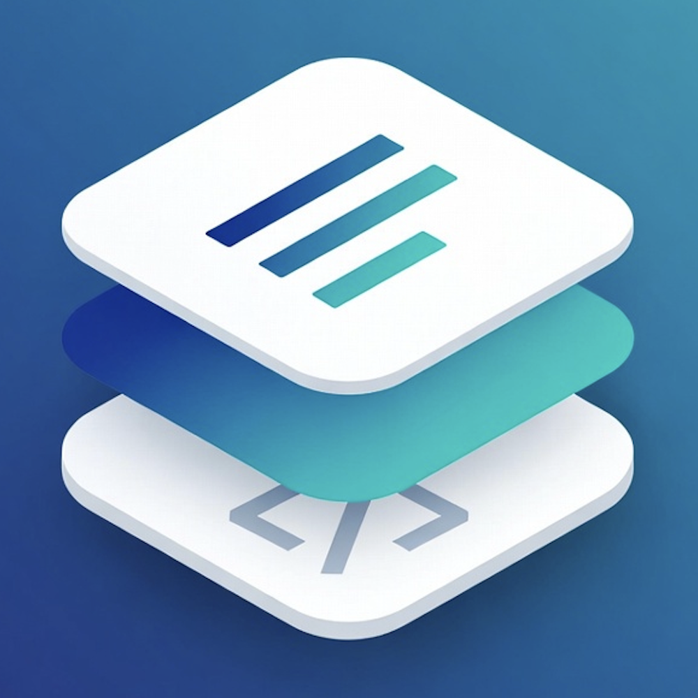
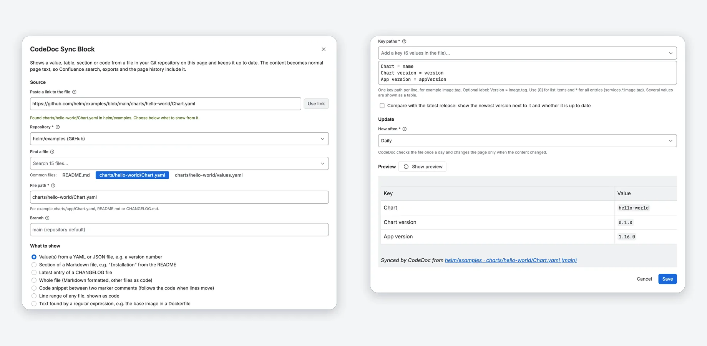
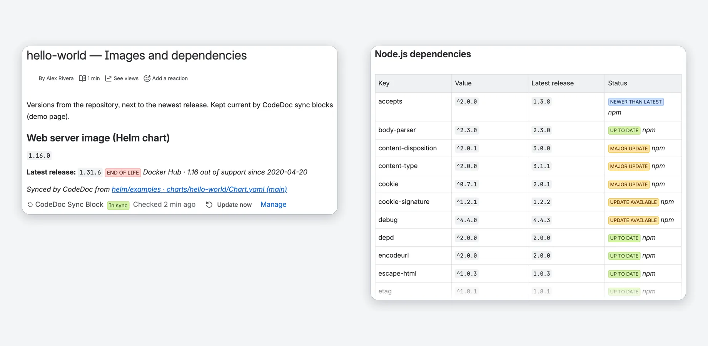
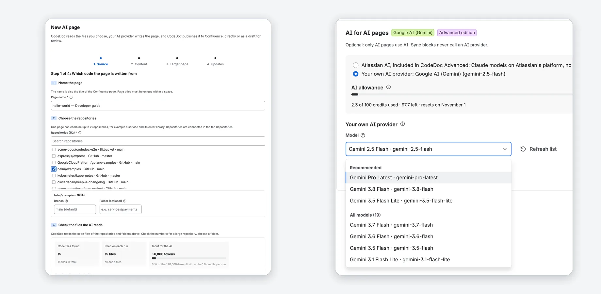
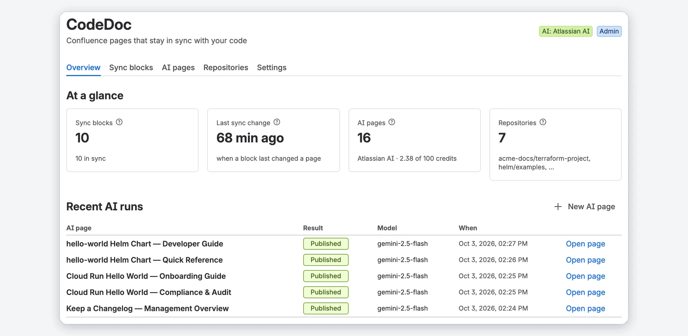

Confluence pages that stay in sync with your code
Paste a link to a file in GitHub, GitLab, Bitbucket or Azure DevOps. CodeDoc puts its version, config values, a README section, the latest changelog entry or a code snippet on the page and keeps it current. AI-written pages are optional.
30-day free trial. Two editions: Standard, and Advanced with Atlassian AI included. No AI key needed for sync blocks.
What you get
Screenshots from a real Confluence site with public sample repositories.
Facts from Git, always current on the page
A sync block shows a value, a table, a section or code from a file in your repository. CodeDoc updates it on every push, daily, weekly or when you click Update now.
- Values from YAML or JSON, a README section, the latest CHANGELOG entry, a snippet between marker comments, a line range or the whole file.
- Normal page text: Confluence search, export and page history include it.
- A new page version only when the file changed. No AI involved.

Paste a link, pick what to show, preview
Type / on a page, choose CodeDoc Sync Block and paste the link to a file. CodeDoc fills in repository, branch and path.
- Pick keys, headings or snippets from the file instead of typing them.
- The preview shows the result before you save; problems come with the next step.
- Only Job Operators and admins choose where content comes from.

The newest release next to each version
Optional for values and regular expressions: CodeDoc looks up the newest release of what the value names and shows a status such as Up to date, Update available or End of life.
- Docker Hub images, npm and PyPI packages, GitHub releases.
- Support dates from endoflife.date for products such as nginx, PostgreSQL or Node.js.
- Only the public name of the image or package goes to the registry.

AI pages: Atlassian AI or your own key
Let AI write whole documentation pages from your code: with Atlassian AI, included in CodeDoc Advanced with a monthly allowance, or with your own Anthropic, OpenAI or Google Gemini key.
- Four guided steps: source, content, target page, updates.
- 8 writing styles, 9 languages or any other you type.
- Review each run as a draft before it goes live, or undo the last run.

Every block and page at a glance
The Overview shows the numbers, what needs attention and the latest AI runs. The Sync blocks tab lists every block with its page, source, update rule and status.
- Problems in plain language, with what to do.
- Several Git connections, including your own GitHub Enterprise or GitLab server.
- Access by Confluence group: Administrator and Job Operator.
Watch the tour
A short walkthrough of CodeDoc in Confluence.
Confluence alone vs. with CodeDoc
| Confluence alone | With CodeDoc | |
|---|---|---|
| A version or config value from Git | Typed in by hand; it goes stale when the file changes | A sync block reads the file and updates the page on every push, daily or weekly |
| README sections, changelogs, code | Copied in by hand | Kept current from the file; a snippet between marker comments follows the code when lines move |
| Is a version still supported? | You look it up in each registry | Optional version check: newest release and end of life next to the version |
| Documentation pages from code | Written and updated by hand | AI pages with Atlassian AI (Advanced) or your own key, with review before publishing |
Compared with Confluence Cloud without apps.
Standard and Advanced
Both start with a 30-day free trial; per-user pricing is on the Marketplace listing.
Standard
Every CodeDoc feature; AI pages with your own AI key.
- Sync blocks with the version check
- GitHub, GitLab, Bitbucket Cloud, Azure DevOps and your own GitHub Enterprise or GitLab server
- AI pages with your own Anthropic, OpenAI or Google Gemini key
- Review before publishing, undo, schedules, webhooks, roles
Advanced
Standard plus Atlassian AI, so AI pages need no own key.
- Everything in Standard
- Atlassian AI: Claude models on Atlassian's platform, model Balanced or Fast
- 100 credits a month per site, 30 for the whole trial, with a usage meter
- Your own AI key stays available as an alternative
Without an active subscription, for example after the trial, CodeDoc keeps 3 sync blocks current and runs 1 AI page; blocks set up before keep running.
Running in three steps
Install and connect Git
Get CodeDoc from the Atlassian Marketplace. The setup asks for a read-only access token of your Git provider; an AI key is optional.
Add repositories
Browse your Git account or paste the address of a repository.
Add a sync block
Type / on any page, choose CodeDoc Sync Block and paste the link to a file. The Quick start has every step.
What is a sync block?
Do I need an AI key?
Which Git events update a page?
Which Confluence version do I need?
How long does setup take?
Does my code leave Atlassian's infrastructure?
Docs that keep up with the code
30-day free trial. Sync blocks need no AI key.